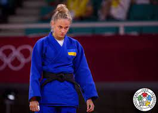

Džudo
Par džudo:
Džudo sākums ir Džigoro Kano 1882. gadā izveidotā džudo skola. Tās dibinātājs kopš bērnības nodarbojies ar džiudžitsu. Sava veida cēlonis jaunas sistēmas meklējumiem bija 19. gadsimta 2. pusē notikušā Meidzi restaurācija, kuras dēļ sākās Japānas politiskā un sabiedriskā modernizācija. Kano uzskatīja, ka džiudžitsa pirmšķirīgais mērķis ir vardarbība, turpretim viņa izveidotā džudo pamatuzdevums ir personības pilnveidošana.
Labākie džudoisti:
1.Shohei Ono (大野将平, Ōno Shōhei, dzimis 1992. gada 3. februārī) ir Japānas džudists. Ono tiek uzskatīts par vienu no labākajiem džudo cīnītājiem, viņam ir trīs pasaules čempionātu un divas olimpiskās zelta medaļas. Viņš ir vieglā svara divīzijas dominējošais cīnītājs, kopš 2015. gada viņš ir uzvarējis visos galvenajos čempionātos. Specializējoties uchi mata, viņš ir pazīstams ar savu klasisko tehniku un visu ippon stilu. Viņam ir viens no augstākajiem ippon rādītājiem džudo. Ono ir arī viens no visvairāk meklētajiem džudistiem internetā

2.Yeldos Smetov (Kazakh: Елдос Бахтыбайұлы Сметов, Eldos Bahtybaiūly Smetov; born 9 September 1992) is a Kazakh judoka who competes in the under 60 kg weight division. He won gold medals at the 2014 Asian Games and 2015 World Judo Championships, and a silver medal at the 2016 Olympics. He won the bronze medal at the 2020 Olympics held in Tokyo, Japan.

3.Daria Hennadiyivna Bilodid (Ukrainian: Дар'я Геннадіївна Білодід; born 10 October 2000) is a Ukrainian judoka. She is the 2019 World and the 2019 European gold medalist in the 48 kg division. In 2021, she won one of the bronze medals in the women's 48 kg event at the 2020 Summer Olympics in Tokyo, Japan.

Par mani